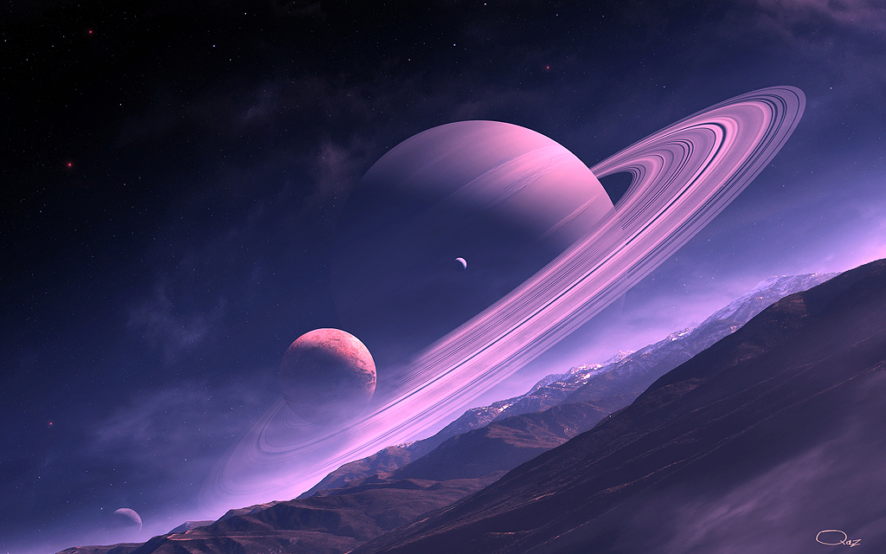
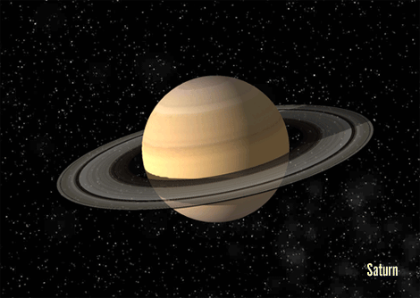

Saturn

- Saturn se roteste in jurul axei in 10 ore si 39 min.
- Se invarte 29,46 ani in jurul Soarelui.
- Temperatura: -180 ° C. Diametru: 120,000 km.
- Gravitatia: 1.32 X decat cea a Pamantului.
- Compozitia atmosferei: hidrogen si heliu.
- Are 60 de luni si un sistem de inele mare.
- A fost vizitat de Pioneer 10 & 11, Voyager 1 & 2, si de sonda spatiala Cassini.

Saturn este a sasea planeta de la Soare si a doua ca marime din Sistemul Solar, dupa Jupiter. Împreuna cu Jupiter, Uranus si Neptun, Saturn este clasificat ca un gigant gazos. Aceste planete sunt numite corpuri joviane, însemnând planete asemanatoare cu Jupiter. Saturn este numit dupa zeul roman Saturnus (care va denumi ziua de sâmbata), echivalentul zeului grec Kronos (Titan si tatal lui Zeus), babilonianul Ninurta si divinitatii Hindu Shani. Simbolul lui Saturn este coasa zeului Kronos.